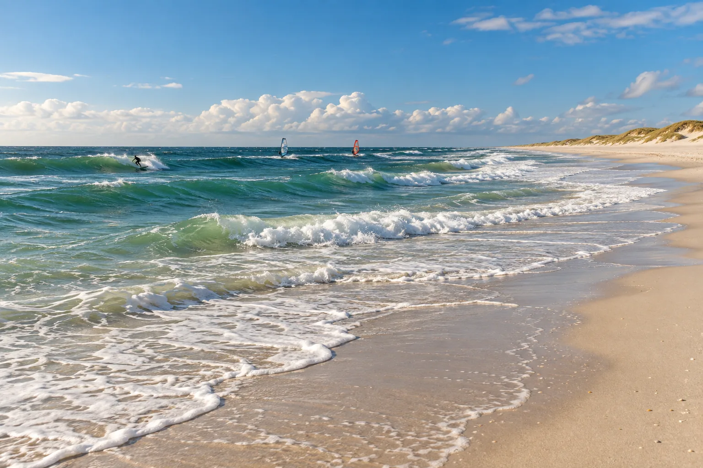

Westerland
Sylt, Allemagne · surf, windsurf, kitesurf

Longue plage de l’île de Sylt, exposée à la mer du Nord. Elle accueille chaque automne une étape de la Coupe du monde de windsurf.
- Lieu
- Sylt, Allemagne
- Niveau
- Intermédiaire
- Activités
- surf, windsurf, kitesurf
- Type d'eau
- Mer / océan
- Coordonnées
- 54.91, 8.30 (position approximative du secteur)
Dangers à connaître
- Courants de marée forts.
- Tempêtes d’automne.
Le conseil d'Ocean Buddy
Respecte les zones balisées : baignade et sports de glisse sont séparés.
Ouvrir dans Ocean Buddy Télécharger sur l'App Store
Source : Fiche Ocean Buddy · septembre 2026 · à vérifier localement.